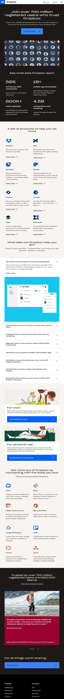
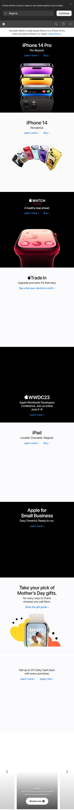
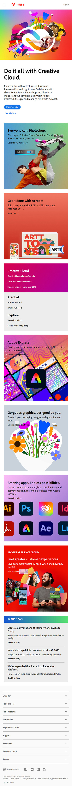

Proximity
Dropbox
dropbox.com Dropbox's website is an excellent example of how the principle of proximity can be used to create a clear and organized design. On their homepage, you can see that they group related elements together, such as the navigation links, search bar, and sign-in button in the top right corner. This helps to create a clear visual hierarchy and make it easy for users to find what they're looking for. Furthermore, Dropbox uses consistent spacing and alignment throughout the website. For example, their pricing plans are displayed in a grid format with equal spacing between each option, making it easy for users to compare the different plans. Overall, Dropbox's website is a great example of how the principle of proximity can be used to create a visually appealing and easy-to-use design.
Visual Hierarchy
Apple
apple.com Apple's website has a Clear and consistent use of typography throughout their website. Headings are larger and bolder than body text, making them stand out and guiding the user's eye to important information. It uses white space which helps to create a sense of balance and hierarchy on the page. By leaving space around key elements, such as product images and text, Apple allows those elements to stand out and guide the user's attention. Its Color contrast draws attention to important elements on the page. Finally, it has a consistent layout throughout, which helps users to quickly and easily understand how to navigate the site. Important elements, such as the main navigation menu and search bar, are always in the same place, making them easy to find and use.
Rule of Thirds
Adobe
adobe.com On the Adobe homepage, the Rule of Thirds is used to create a clear visual hierarchy and guide the user's attention to the most important content. It is divided into three main sections, with the middle section taking up two-thirds of the page and containing the main content and call-to-action. The upper third of the page contains the Adobe logo and navigation menu, while the lower third of the page features a series of smaller sections that promote various products and services. These sections are arranged in a grid pattern that follows the Rule, with the focus on the left-hand side of the grid. The layout creates a balanced and visually appealing design that highlights the most important content. The use of whitespace also helps to create a sense of balance and harmony.